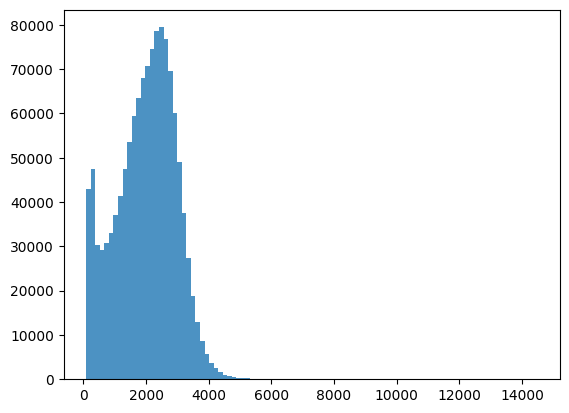
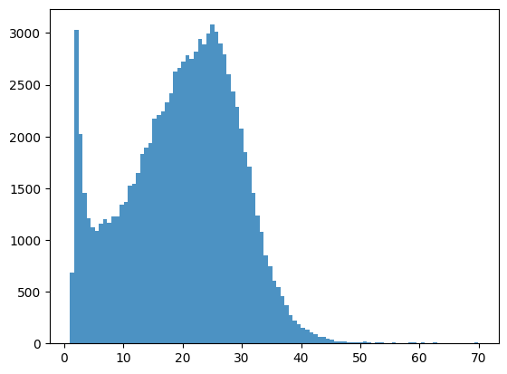
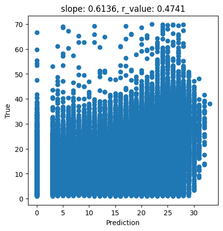
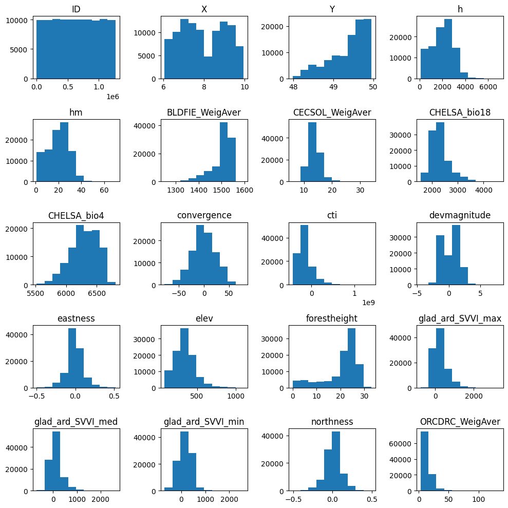
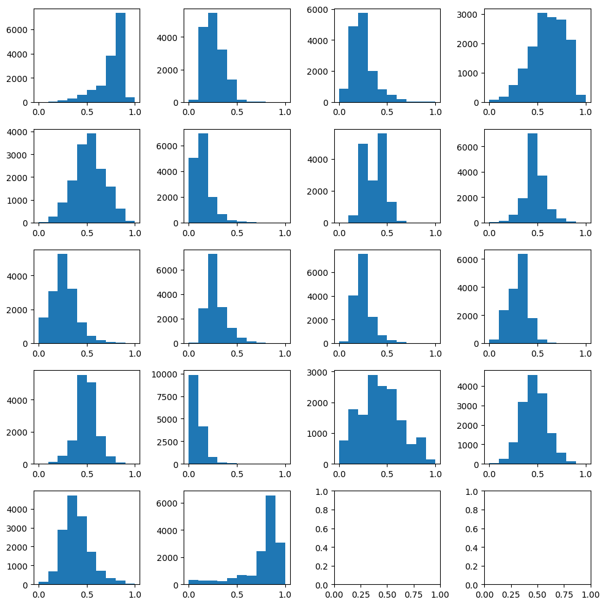
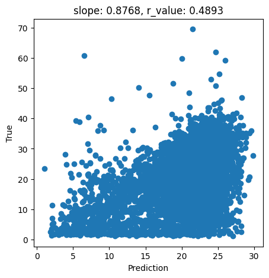
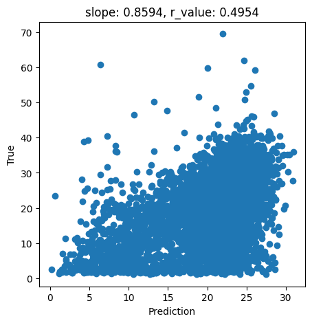
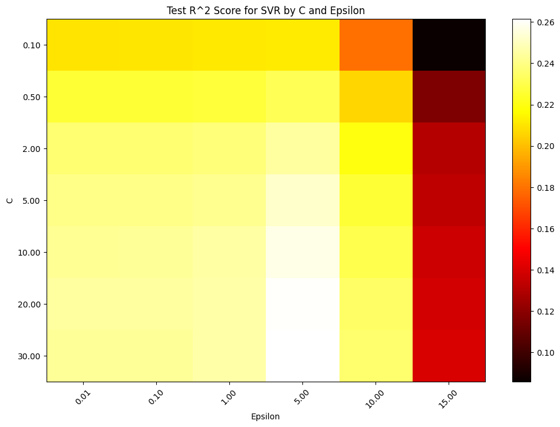
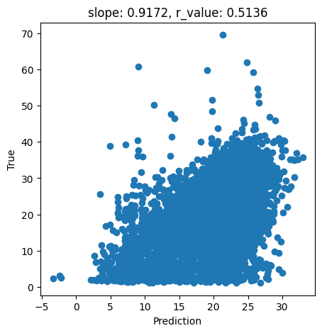

Estimation of tree height using GEDI dataset - Support Vector Machine for Regression (SVR) - 2026
Let’s see a quick example of how to use Suppor Vector Regression for tree height estimation
Here are some general installation instructions:
Create a conda enviroment if you don’t have one and activate it:
conda create --name geo_comp_2026 python=3.9
conda activate geo_comp_2026
Install the needed packages for this tutorial
conda install -c conda-forge pandas numpy scikit-learn scipy rasterio matplotlib
Notes:
If you are using jupyterlab of VScode, you might need to add this new environment to the list of kernels. In that case, do the following
Install ipykernel:
conda install ipykernelAdd the environment to the list of kernels
python -m ipykernel install --user --name geo_comp_2026 --display-name "Python geo_comp_2026"
If you haven’t loaded the Tree Height dataset, follow the steps below
Install gdown on your conda env:
pip install gdownDownload the dataset and unpack it
gdown 1Y60EuLsfmTICTX-U_FxcE1odNAf04bd
tar -xvzf tree_height.tar.gz
[1]:
import pandas as pd
import numpy as np
from sklearn.model_selection import train_test_split
from sklearn.preprocessing import MinMaxScaler
from sklearn.svm import SVR
import scipy
# For visualization
import rasterio
from rasterio import *
from rasterio.plot import show
from sklearn.ensemble import RandomForestRegressor
# from sklearn.model_selection import train_test_split,GridSearchCV
# from sklearn.pipeline import Pipeline
from scipy.stats import pearsonr
import matplotlib.pyplot as plt
from pyspatialml import Raster
[2]:
# NumPy 2.x compatibility patch for pyspatialml
if not hasattr(np, "find_common_type"):
np.find_common_type = lambda arr, sc: np.result_type(*(list(arr) + list(sc))) if (list(arr) + list(sc)) else np.dtype("float64")
We will load the data using Pandas and display few samples of it
[3]:
predictors = pd.read_csv("tree_height/txt/eu_x_y_height_predictors_select.txt", sep=" ", index_col=False)
pd.set_option('display.max_columns',None)
# change column name
predictors = predictors.rename({'dev-magnitude':'devmagnitude'} , axis='columns')
predictors.head(10)
[3]:
| ID | X | Y | h | BLDFIE_WeigAver | CECSOL_WeigAver | CHELSA_bio18 | CHELSA_bio4 | convergence | cti | devmagnitude | eastness | elev | forestheight | glad_ard_SVVI_max | glad_ard_SVVI_med | glad_ard_SVVI_min | northness | ORCDRC_WeigAver | outlet_dist_dw_basin | SBIO3_Isothermality_5_15cm | SBIO4_Temperature_Seasonality_5_15cm | treecover | |
|---|---|---|---|---|---|---|---|---|---|---|---|---|---|---|---|---|---|---|---|---|---|---|---|
| 0 | 1 | 6.050001 | 49.727499 | 3139.00 | 1540 | 13 | 2113 | 5893 | -10.486560 | -238043120 | 1.158417 | 0.069094 | 353.983124 | 23 | 276.871094 | 46.444092 | 347.665405 | 0.042500 | 9 | 780403 | 19.798992 | 440.672211 | 85 |
| 1 | 2 | 6.050002 | 49.922155 | 1454.75 | 1491 | 12 | 1993 | 5912 | 33.274361 | -208915344 | -1.755341 | 0.269112 | 267.511688 | 19 | -49.526367 | 19.552734 | -130.541748 | 0.182780 | 16 | 772777 | 20.889412 | 457.756195 | 85 |
| 2 | 3 | 6.050002 | 48.602377 | 853.50 | 1521 | 17 | 2124 | 5983 | 0.045293 | -137479792 | 1.908780 | -0.016055 | 389.751160 | 21 | 93.257324 | 50.743652 | 384.522461 | 0.036253 | 14 | 898820 | 20.695877 | 481.879700 | 62 |
| 3 | 4 | 6.050009 | 48.151979 | 3141.00 | 1526 | 16 | 2569 | 6130 | -33.654274 | -267223072 | 0.965787 | 0.067767 | 380.207703 | 27 | 542.401367 | 202.264160 | 386.156738 | 0.005139 | 15 | 831824 | 19.375000 | 479.410278 | 85 |
| 4 | 5 | 6.050010 | 49.588410 | 2065.25 | 1547 | 14 | 2108 | 5923 | 27.493824 | -107809368 | -0.162624 | 0.014065 | 308.042786 | 25 | 136.048340 | 146.835205 | 198.127441 | 0.028847 | 17 | 796962 | 18.777500 | 457.880066 | 85 |
| 5 | 6 | 6.050014 | 48.608456 | 1246.50 | 1515 | 19 | 2124 | 6010 | -1.602039 | 17384282 | 1.447979 | -0.018912 | 364.527100 | 18 | 221.339844 | 247.387207 | 480.387939 | 0.042747 | 14 | 897945 | 19.398880 | 474.331329 | 62 |
| 6 | 7 | 6.050016 | 48.571401 | 2938.75 | 1520 | 19 | 2169 | 6147 | 27.856503 | -66516432 | -1.073956 | 0.002280 | 254.679596 | 19 | 125.250488 | 87.865234 | 160.696777 | 0.037254 | 11 | 908426 | 20.170450 | 476.414520 | 96 |
| 7 | 8 | 6.050019 | 49.921613 | 3294.75 | 1490 | 12 | 1995 | 5912 | 22.102139 | -297770784 | -1.402633 | 0.309765 | 294.927765 | 26 | -86.729492 | -145.584229 | -190.062988 | 0.222435 | 15 | 772784 | 20.855963 | 457.195404 | 86 |
| 8 | 9 | 6.050020 | 48.822645 | 1623.50 | 1554 | 18 | 1973 | 6138 | 18.496584 | -25336536 | -0.800016 | 0.010370 | 240.493759 | 22 | -51.470703 | -245.886719 | 172.074707 | 0.004428 | 8 | 839132 | 21.812290 | 496.231110 | 64 |
| 9 | 10 | 6.050024 | 49.847522 | 1400.00 | 1521 | 15 | 2187 | 5886 | -5.660453 | -278652608 | 1.477951 | -0.068720 | 376.671143 | 12 | 277.297363 | 273.141846 | -138.895996 | 0.098817 | 13 | 768873 | 21.137711 | 466.976685 | 70 |
[4]:
len(predictors) # original: 1267239
[4]:
1267239
As explained in the previous lecture, ‘h’ is the estimated tree heigth. So let’s use it as our target.
[5]:
bins = np.linspace(min(predictors['h']),max(predictors['h']),100)
plt.hist((predictors['h']),bins,alpha=0.8)
[5]:
(array([4.2886e+04, 4.7517e+04, 3.0371e+04, 2.9201e+04, 3.0742e+04,
3.2932e+04, 3.6990e+04, 4.1454e+04, 4.7479e+04, 5.3498e+04,
5.9376e+04, 6.3533e+04, 6.7949e+04, 7.0729e+04, 7.4511e+04,
7.8514e+04, 7.9429e+04, 7.6759e+04, 6.9654e+04, 6.0192e+04,
4.9049e+04, 3.7490e+04, 2.7254e+04, 1.8778e+04, 1.2967e+04,
8.6820e+03, 5.6980e+03, 3.6230e+03, 2.4370e+03, 1.5850e+03,
1.0550e+03, 6.8900e+02, 4.7600e+02, 3.4300e+02, 2.6100e+02,
2.3600e+02, 1.6900e+02, 1.7000e+02, 1.4700e+02, 1.3700e+02,
1.4500e+02, 1.2300e+02, 9.8000e+01, 1.0800e+02, 9.3000e+01,
1.0500e+02, 8.7000e+01, 1.1100e+02, 8.0000e+01, 6.7000e+01,
8.5000e+01, 8.1000e+01, 7.5000e+01, 6.1000e+01, 5.8000e+01,
6.4000e+01, 6.0000e+01, 4.5000e+01, 4.8000e+01, 5.2000e+01,
5.0000e+01, 4.9000e+01, 5.6000e+01, 3.3000e+01, 3.6000e+01,
3.6000e+01, 3.5000e+01, 2.9000e+01, 2.2000e+01, 2.3000e+01,
1.9000e+01, 1.5000e+01, 1.4000e+01, 2.2000e+01, 1.7000e+01,
1.7000e+01, 1.0000e+01, 8.0000e+00, 1.2000e+01, 1.2000e+01,
1.3000e+01, 5.0000e+00, 1.5000e+01, 9.0000e+00, 5.0000e+00,
1.0000e+01, 7.0000e+00, 6.0000e+00, 4.0000e+00, 4.0000e+00,
5.0000e+00, 8.0000e+00, 6.0000e+00, 2.0000e+00, 2.0000e+00,
4.0000e+00, 3.0000e+00, 3.0000e+00, 5.0000e+00]),
array([ 84.75 , 230.16666667, 375.58333333, 521. ,
666.41666667, 811.83333333, 957.25 , 1102.66666667,
1248.08333333, 1393.5 , 1538.91666667, 1684.33333333,
1829.75 , 1975.16666667, 2120.58333333, 2266. ,
2411.41666667, 2556.83333333, 2702.25 , 2847.66666667,
2993.08333333, 3138.5 , 3283.91666667, 3429.33333333,
3574.75 , 3720.16666667, 3865.58333333, 4011. ,
4156.41666667, 4301.83333333, 4447.25 , 4592.66666667,
4738.08333333, 4883.5 , 5028.91666667, 5174.33333333,
5319.75 , 5465.16666667, 5610.58333333, 5756. ,
5901.41666667, 6046.83333333, 6192.25 , 6337.66666667,
6483.08333333, 6628.5 , 6773.91666667, 6919.33333333,
7064.75 , 7210.16666667, 7355.58333333, 7501. ,
7646.41666667, 7791.83333333, 7937.25 , 8082.66666667,
8228.08333333, 8373.5 , 8518.91666667, 8664.33333333,
8809.75 , 8955.16666667, 9100.58333333, 9246. ,
9391.41666667, 9536.83333333, 9682.25 , 9827.66666667,
9973.08333333, 10118.5 , 10263.91666667, 10409.33333333,
10554.75 , 10700.16666667, 10845.58333333, 10991. ,
11136.41666667, 11281.83333333, 11427.25 , 11572.66666667,
11718.08333333, 11863.5 , 12008.91666667, 12154.33333333,
12299.75 , 12445.16666667, 12590.58333333, 12736. ,
12881.41666667, 13026.83333333, 13172.25 , 13317.66666667,
13463.08333333, 13608.5 , 13753.91666667, 13899.33333333,
14044.75 , 14190.16666667, 14335.58333333, 14481. ]),
<BarContainer object of 99 artists>)

[6]:
predictors_sel = predictors.loc[(predictors['h'] < 7000) ].sample(100000)
predictors_sel.insert ( 4, 'hm' , predictors_sel['h']/100 ) # add a col of heigh in meters
print(len(predictors_sel))
predictors_sel.head(10)
100000
[6]:
| ID | X | Y | h | hm | BLDFIE_WeigAver | CECSOL_WeigAver | CHELSA_bio18 | CHELSA_bio4 | convergence | cti | devmagnitude | eastness | elev | forestheight | glad_ard_SVVI_max | glad_ard_SVVI_med | glad_ard_SVVI_min | northness | ORCDRC_WeigAver | outlet_dist_dw_basin | SBIO3_Isothermality_5_15cm | SBIO4_Temperature_Seasonality_5_15cm | treecover | |
|---|---|---|---|---|---|---|---|---|---|---|---|---|---|---|---|---|---|---|---|---|---|---|---|---|
| 913378 | 913379 | 8.882207 | 49.672347 | 3185.25 | 31.8525 | 1518 | 13 | 2643 | 6330 | 26.204020 | 139056832 | 0.951690 | -0.053181 | 341.708923 | 27 | -54.174805 | -95.832520 | -97.327881 | 0.056747 | 15 | 718380 | 20.596432 | 486.906921 | 85 |
| 399194 | 399195 | 7.218343 | 49.815899 | 1471.00 | 14.7100 | 1392 | 12 | 2388 | 5732 | 14.451588 | -119020368 | 2.273924 | 0.106378 | 584.937500 | 23 | 125.125488 | -236.454834 | -412.245117 | -0.019090 | 33 | 629871 | 21.379816 | 433.546661 | 85 |
| 1051554 | 1051555 | 9.219725 | 49.608233 | 2272.25 | 22.7225 | 1532 | 12 | 2091 | 6350 | -41.441132 | -150667936 | 1.742874 | 0.002864 | 470.262482 | 26 | 23.418945 | -161.524658 | -430.280762 | 0.010492 | 13 | 722706 | 18.597925 | 473.179382 | 85 |
| 82847 | 82848 | 6.352083 | 49.747792 | 551.50 | 5.5150 | 1510 | 16 | 2235 | 5948 | 16.482677 | -123181768 | -0.630119 | -0.100164 | 313.726349 | 9 | 327.617676 | 50.381592 | -119.103271 | -0.073008 | 12 | 710051 | 20.216003 | 473.799133 | 27 |
| 988551 | 988552 | 9.062895 | 49.725683 | 1859.00 | 18.5900 | 1521 | 14 | 2478 | 6404 | 23.876968 | -283314592 | -0.580429 | 0.139336 | 330.208832 | 8 | 381.459717 | 406.993652 | 146.392822 | 0.079916 | 11 | 718421 | 20.972237 | 499.222168 | 60 |
| 323579 | 323580 | 7.042325 | 49.899161 | 1133.25 | 11.3325 | 1528 | 13 | 1871 | 6224 | -8.266154 | -363724384 | -0.128035 | 0.152906 | 307.110260 | 24 | -26.110840 | -37.309082 | 31.492554 | 0.327583 | 12 | 612429 | 19.715183 | 459.910187 | 85 |
| 1101032 | 1101033 | 9.342970 | 48.969061 | 3206.00 | 32.0600 | 1528 | 15 | 2542 | 6560 | 20.984264 | 15857734 | -1.031843 | -0.000128 | 308.007874 | 26 | 121.762451 | 168.121338 | 323.751709 | -0.019902 | 9 | 829244 | 17.987387 | 484.482605 | 100 |
| 288095 | 288096 | 6.958537 | 48.805559 | 2310.50 | 23.1050 | 1538 | 11 | 2206 | 6320 | 38.485756 | 208938096 | -1.168826 | -0.004806 | 245.023285 | 23 | 309.372803 | 381.092285 | 210.433716 | 0.010540 | 8 | 867325 | 19.326263 | 485.738098 | 63 |
| 116470 | 116471 | 6.465766 | 49.493455 | 2551.75 | 25.5175 | 1527 | 12 | 2707 | 5931 | -25.785652 | -231972688 | 1.294931 | -0.038748 | 374.514069 | 23 | 306.397949 | 115.095459 | 240.195557 | 0.030025 | 13 | 721560 | 19.611473 | 446.943024 | 85 |
| 1012491 | 1012492 | 9.119549 | 49.763407 | 2600.50 | 26.0050 | 1511 | 13 | 2406 | 6390 | -18.716288 | -199299120 | 0.868141 | -0.041656 | 354.596039 | 23 | 238.734863 | -53.580078 | -90.442383 | 0.027391 | 17 | 699834 | 20.477091 | 456.734619 | 85 |
[7]:
predictors_sel.shape
[7]:
(100000, 24)
[8]:
bins = np.linspace(min(predictors_sel['hm']),max(predictors_sel['hm']),100)
plt.hist((predictors_sel['hm']),bins,alpha=0.8);

[9]:
# What we are trying to beat
y_true = predictors_sel['hm']
y_pred = predictors_sel['forestheight']
slope, intercept, r_value, p_value, std_err = scipy.stats.linregress(y_pred, y_true)
fig,ax=plt.subplots(1,1,figsize=(5,5))
ax.scatter(y_pred, y_true)
ax.set_xlabel('Prediction')
ax.set_ylabel('True')
ax.set_title('slope: {:.4f}, r_value: {:.4f}'.format(slope, r_value))
plt.show()

[10]:
#Explore the raw data
# data = data.to_numpy()
n_plots_x = int(np.ceil(np.sqrt(predictors_sel.shape[1])))
n_plots_y = int(np.floor(np.sqrt(predictors_sel.shape[1])))
fig, ax = plt.subplots(n_plots_x, n_plots_y, figsize=(10, 10), dpi=100, facecolor='w', edgecolor='k')
ax=ax.ravel()
for idx in range(20):
ax[idx].hist(predictors_sel.iloc[:, idx].to_numpy().flatten())
ax[idx].set_title(predictors_sel.columns[idx])
fig.tight_layout()

[11]:
tree_height = predictors_sel['hm'].to_numpy()
data = predictors_sel.drop(columns=['ID','h','X','Y', 'hm','forestheight'])
Now we will split the data into training vs test datasets and perform the normalization.
[12]:
X_train, X_test, y_train, y_test = train_test_split(data.to_numpy()[:20000,:],tree_height[:20000], random_state=0)
print('X_train.shape:{}, X_test.shape:{} '.format(X_train.shape, X_test.shape))
scaler = MinMaxScaler()
X_train = scaler.fit_transform(X_train)
X_test = scaler.transform(X_test)
X_train.shape:(15000, 18), X_test.shape:(5000, 18)
[13]:
# Check the normalized data
n_plots_x = int(np.ceil(np.sqrt(X_train.shape[1])))
n_plots_y = int(np.floor(np.sqrt(X_train.shape[1])))
fig, ax = plt.subplots(n_plots_x, n_plots_y, figsize=(10, 10), dpi=100, facecolor='w', edgecolor='k')
ax=ax.ravel()
for idx in range(18):
ax[idx].hist(X_train[:, idx].flatten())
# ax[idx].set_title(predictors_sel.columns[idx])
fig.tight_layout()

Now, we will build our SVR regressor. For more details on all the parameters it accepts, please check the documentation
[14]:
svr = SVR()
svr.fit(X_train, y_train) # Fit the SVR model according to the given training data.
print('Accuracy of SVR on training set: {:.5f}'.format(svr.score(X_train, y_train))) # Returns the coefficient of determination (R^2) of the prediction.
print('Accuracy of SVR on test set: {:.5f}'.format(svr.score(X_test, y_test)))
Accuracy of SVR on training set: 0.23972
Accuracy of SVR on test set: 0.23232
Now, let’s test the fitted model
[15]:
y_pred = svr.predict(X_test)
slope, intercept, r_value, p_value, std_err = scipy.stats.linregress(y_pred, y_test)
fig,ax=plt.subplots(1,1,figsize=(5,5))
ax.scatter(y_pred, y_test)
ax.set_xlabel('Prediction')
ax.set_ylabel('True')
ax.set_title('slope: {:.4f}, r_value: {:.4f}'.format(slope, r_value))
plt.show()

[16]:
svr = SVR(epsilon=0.01) # Let's change the size of the epsilon-tube
svr.fit(X_train, y_train) # Fit the SVR model according to the given training data.
print('Accuracy of SVR on training set: {:.5f}'.format(svr.score(X_train, y_train))) # Returns the coefficient of determination (R^2) of the prediction.
print('Accuracy of SVR on test set: {:.5f}'.format(svr.score(X_test, y_test)))
Accuracy of SVR on training set: 0.23964
Accuracy of SVR on test set: 0.23212
[17]:
svr = SVR(epsilon=0.01, C=2.0) # Let's add some slack to this model
svr.fit(X_train, y_train) # Fit the SVR model according to the given training data.
print('Accuracy of SVR on training set: {:.5f}'.format(svr.score(X_train, y_train))) # Returns the coefficient of determination (R^2) of the prediction.
print('Accuracy of SVR on test set: {:.5f}'.format(svr.score(X_test, y_test)))
Accuracy of SVR on training set: 0.24863
Accuracy of SVR on test set: 0.23657
Let’s do I quick plot to show how this model is performing
[18]:
y_pred = svr.predict(X_test)
slope, intercept, r_value, p_value, std_err = scipy.stats.linregress(y_pred, y_test)
fig,ax=plt.subplots(1,1,figsize=(5,5))
ax.scatter(y_pred, y_test)
ax.set_xlabel('Prediction')
ax.set_ylabel('True')
ax.set_title('slope: {:.4f}, r_value: {:.4f}'.format(slope, r_value))
plt.show()

Since ‘C’ and ‘epsilon’ are hyperparameter, how can see be sure we are selecting the best parameters for this task? One way is via testing a large range of parameters
[19]:
import numpy as np
import matplotlib.pyplot as plt
from sklearn.svm import SVR
from sklearn.model_selection import train_test_split
from sklearn.metrics import r2_score
# Define a range of 'C' values and 'epsilon' values to test
C_values = [0.1, 0.5, 2, 5, 10, 20, 30] # Logarithmically spaced values from 0.01 to 100
epsilon_values = [0.01, 0.1, 1, 5, 10, 15] # Linearly spaced values from 0.01 to 0.1
# Matrix to store scores for each combination of C and epsilon
scores = np.zeros((len(C_values), len(epsilon_values)))
# Loop over the values of C and epsilon
for j, epsilon in enumerate(epsilon_values):
for i, C in enumerate(C_values):
svr = SVR(epsilon=epsilon, C=C)
svr.fit(X_train, y_train)
# Evaluate on the test set
score = svr.score(X_test, y_test)
scores[i, j] = score
print(f'C: {C}, epsilon: {epsilon}, score: {score}')
# Plotting the results using a heatmap
plt.figure(figsize=(12, 8))
plt.imshow(scores, interpolation='nearest', cmap=plt.cm.hot, aspect='auto')
plt.xlabel('Epsilon')
plt.ylabel('C')
plt.colorbar()
plt.xticks(np.arange(len(epsilon_values)), ['{:.2f}'.format(eps) for eps in epsilon_values], rotation=45)
plt.yticks(np.arange(len(C_values)), ['{:.2f}'.format(c) for c in C_values])
plt.title('Test R^2 Score for SVR by C and Epsilon')
plt.show()
C: 0.1, epsilon: 0.01, score: 0.20991995961716992
C: 0.5, epsilon: 0.01, score: 0.22612846899651118
C: 2, epsilon: 0.01, score: 0.2365668732185091
C: 5, epsilon: 0.01, score: 0.24056242242851433
C: 10, epsilon: 0.01, score: 0.2429408169988566
C: 20, epsilon: 0.01, score: 0.24472596728667861
C: 30, epsilon: 0.01, score: 0.243360274955275
C: 0.1, epsilon: 0.1, score: 0.2103005921649257
C: 0.5, epsilon: 0.1, score: 0.22606989340094064
C: 2, epsilon: 0.1, score: 0.23678250721356053
C: 5, epsilon: 0.1, score: 0.2404947913592861
C: 10, epsilon: 0.1, score: 0.24305086505451956
C: 20, epsilon: 0.1, score: 0.24504954391258305
C: 30, epsilon: 0.1, score: 0.24348299246368343
C: 0.1, epsilon: 1, score: 0.21093892736458641
C: 0.5, epsilon: 1, score: 0.226719697213827
C: 2, epsilon: 1, score: 0.23803327114830342
C: 5, epsilon: 1, score: 0.24207967494903404
C: 10, epsilon: 1, score: 0.24520955760079832
C: 20, epsilon: 1, score: 0.24611213734158977
C: 30, epsilon: 1, score: 0.24634335054722845
C: 0.1, epsilon: 5, score: 0.21191731592681273
C: 0.5, epsilon: 5, score: 0.23183716657514897
C: 2, epsilon: 5, score: 0.24508827723146664
C: 5, epsilon: 5, score: 0.2524757704090205
C: 10, epsilon: 5, score: 0.25713959246246865
C: 20, epsilon: 5, score: 0.26064565425376707
C: 30, epsilon: 5, score: 0.2615897511408104
C: 0.1, epsilon: 10, score: 0.17929567698442406
C: 0.5, epsilon: 10, score: 0.20593053182898224
C: 2, epsilon: 10, score: 0.21963851125161138
C: 5, epsilon: 10, score: 0.22607429024593917
C: 10, epsilon: 10, score: 0.23065631272737752
C: 20, epsilon: 10, score: 0.2344238846306863
C: 30, epsilon: 10, score: 0.23548594244449417
C: 0.1, epsilon: 15, score: 0.08566704852027629
C: 0.5, epsilon: 15, score: 0.11609763497355186
C: 2, epsilon: 15, score: 0.13043810923772747
C: 5, epsilon: 15, score: 0.13330531774189558
C: 10, epsilon: 15, score: 0.13719931600961133
C: 20, epsilon: 15, score: 0.13834968592898178
C: 30, epsilon: 15, score: 0.14039431576260986

For a fixed error margin (epsilon), you can perform gridsearch
[20]:
from sklearn.model_selection import GridSearchCV
from sklearn.metrics import make_scorer, r2_score
# Define your model without setting the C parameter
svr = SVR(epsilon=5)
# Define the parameter grid: list of dictionaries with the parameters you want to test
param_grid = {
'C': [0.1, 0.5, 1, 2, 5, 10, 15, 20, 25, 30, 35, 40] # Example values for C
}
# Define the scorer, if you want to change the default scoring method (which is R^2 for regression models)
scorer = make_scorer(r2_score)
# Set up the grid search with cross-validation
grid_search = GridSearchCV(estimator=svr, param_grid=param_grid, scoring=scorer, cv=5, verbose=1)
# Fit the grid search to the data
grid_search.fit(X_train, y_train)
# Get the best model
best_svr = grid_search.best_estimator_
# Output the best parameter
print('Best value of C:', grid_search.best_params_['C'])
print('Best cross-validated R^2 of the best estimator:', grid_search.best_score_)
# Evaluate the best model on the training set
print('Accuracy of SVR on training set: {:.5f}'.format(best_svr.score(X_train, y_train)))
# Evaluate the best model on the test set
print('Accuracy of SVR on test set: {:.5f}'.format(best_svr.score(X_test, y_test)))
Fitting 5 folds for each of 12 candidates, totalling 60 fits
Best value of C: 25
Best cross-validated R^2 of the best estimator: 0.2546769891813275
Accuracy of SVR on training set: 0.29787
Accuracy of SVR on test set: 0.26162
[21]:
y_pred = best_svr.predict(X_test)
slope, intercept, r_value, p_value, std_err = scipy.stats.linregress(y_pred, y_test)
fig,ax=plt.subplots(1,1,figsize=(5,5))
ax.scatter(y_pred, y_test)
ax.set_xlabel('Prediction')
ax.set_ylabel('True')
ax.set_title('slope: {:.4f}, r_value: {:.4f}'.format(slope, r_value))
plt.show()

[22]:
svr = SVR(kernel='linear',epsilon=5, C=30)
svr.fit(X_train, y_train) # Fit the SVR model according to the given training data.
print('Accuracy of SVR on training set: {:.5f}'.format(svr.score(X_train, y_train))) # Returns the coefficient of determination (R^2) of the prediction.
print('Accuracy of SVR on test set: {:.5f}'.format(svr.score(X_test, y_test)))
Accuracy of SVR on training set: 0.19898
Accuracy of SVR on test set: 0.19392
[23]:
svr = SVR(kernel='linear')
svr.fit(X_train, y_train) # Fit the SVR model according to the given training data.
print('Accuracy of SVR on training set: {:.5f}'.format(svr.score(X_train, y_train))) # Returns the coefficient of determination (R^2) of the prediction.
print('Accuracy of SVR on test set: {:.5f}'.format(svr.score(X_test, y_test)))
Accuracy of SVR on training set: 0.19092
Accuracy of SVR on test set: 0.18723
[24]:
# import satalite indeces
glad_ard_SVVI_min = "./tree_height/geodata_raster/glad_ard_SVVI_min.tif"
glad_ard_SVVI_med = "./tree_height/geodata_raster/glad_ard_SVVI_med.tif"
glad_ard_SVVI_max = "./tree_height/geodata_raster/glad_ard_SVVI_max.tif"
# import climate
CHELSA_bio4 = "./tree_height/geodata_raster/CHELSA_bio4.tif"
CHELSA_bio18 = "./tree_height/geodata_raster/CHELSA_bio18.tif"
# soil
BLDFIE_WeigAver = "./tree_height/geodata_raster/BLDFIE_WeigAver.tif"
CECSOL_WeigAver = "./tree_height/geodata_raster/CECSOL_WeigAver.tif"
ORCDRC_WeigAver = "./tree_height/geodata_raster/ORCDRC_WeigAver.tif"
# Geomorphological
elev = "./tree_height/geodata_raster/elev.tif"
convergence = "./tree_height/geodata_raster/convergence.tif"
northness = "./tree_height/geodata_raster/northness.tif"
eastness = "./tree_height/geodata_raster/eastness.tif"
devmagnitude = "./tree_height/geodata_raster/dev-magnitude.tif"
# Hydrography
cti = "./tree_height/geodata_raster/cti.tif"
outlet_dist_dw_basin = "./tree_height/geodata_raster/outlet_dist_dw_basin.tif"
# Soil climate
SBIO3_Isothermality_5_15cm = "./tree_height/geodata_raster/SBIO3_Isothermality_5_15cm.tif"
SBIO4_Temperature_Seasonality_5_15cm = "./tree_height/geodata_raster/SBIO4_Temperature_Seasonality_5_15cm.tif"
# forest
treecover = "./tree_height/geodata_raster/treecover.tif"
[25]:
predictors_rasters = [glad_ard_SVVI_min, glad_ard_SVVI_med, glad_ard_SVVI_max,
CHELSA_bio4,CHELSA_bio18,
BLDFIE_WeigAver,CECSOL_WeigAver, ORCDRC_WeigAver,
elev,convergence,northness,eastness,devmagnitude,cti,outlet_dist_dw_basin,
SBIO3_Isothermality_5_15cm,SBIO4_Temperature_Seasonality_5_15cm,treecover]
print(predictors_rasters)
stack = Raster(predictors_rasters)
['./tree_height/geodata_raster/glad_ard_SVVI_min.tif', './tree_height/geodata_raster/glad_ard_SVVI_med.tif', './tree_height/geodata_raster/glad_ard_SVVI_max.tif', './tree_height/geodata_raster/CHELSA_bio4.tif', './tree_height/geodata_raster/CHELSA_bio18.tif', './tree_height/geodata_raster/BLDFIE_WeigAver.tif', './tree_height/geodata_raster/CECSOL_WeigAver.tif', './tree_height/geodata_raster/ORCDRC_WeigAver.tif', './tree_height/geodata_raster/elev.tif', './tree_height/geodata_raster/convergence.tif', './tree_height/geodata_raster/northness.tif', './tree_height/geodata_raster/eastness.tif', './tree_height/geodata_raster/dev-magnitude.tif', './tree_height/geodata_raster/cti.tif', './tree_height/geodata_raster/outlet_dist_dw_basin.tif', './tree_height/geodata_raster/SBIO3_Isothermality_5_15cm.tif', './tree_height/geodata_raster/SBIO4_Temperature_Seasonality_5_15cm.tif', './tree_height/geodata_raster/treecover.tif']
[26]:
print(stack.meta)
{'crs': CRS.from_wkt('GEOGCS["WGS 84",DATUM["WGS_1984",SPHEROID["WGS 84",6378137,298.257223563,AUTHORITY["EPSG","7030"]],AUTHORITY["EPSG","6326"]],PRIMEM["Greenwich",0,AUTHORITY["EPSG","8901"]],UNIT["degree",0.0174532925199433,AUTHORITY["EPSG","9122"]],AXIS["Latitude",NORTH],AXIS["Longitude",EAST],AUTHORITY["EPSG","4326"]]'), 'transform': Affine(0.00025, 0.0, 6.0,
0.0, -0.00025, 50.0), 'width': 16000, 'height': 8400, 'count': 18, 'dtype': dtype('float64')}
[27]:
result = stack.predict(estimator=svr, dtype='int16', nodata=-1, progress=True)
0%| | 0/2079 [00:00<?, ?it/s] 1%|▏ | 27/2079 [06:41<8:28:58, 14.88s/it]
---------------------------------------------------------------------------
KeyboardInterrupt Traceback (most recent call last)
Cell In[27], line 1
----> 1 result = stack.predict(estimator=svr, dtype='int16', nodata=-1, progress=True)
File ~/art/geocomp/.venv/lib/python3.13/site-packages/pyspatialml/raster.py:1365, in Raster.predict(self, estimator, file_path, in_memory, driver, dtype, nodata, progress, constants, **kwargs)
1363 if in_memory is False:
1364 with rasterio.open(file_path, "w", **meta) as dst:
-> 1365 for w, res, pbar in zip(windows, map(predfun, data_gen), counter):
1366 res = np.ma.filled(res, fill_value=nodata)
1367 dst.write(res[indexes, :, :].astype(dtype), window=w)
File ~/art/geocomp/.venv/lib/python3.13/site-packages/pyspatialml/_prediction.py:111, in predict_output(img, estimator, constants, names)
108 flat_pixels = stack_constants(flat_pixels, constants, names)
110 # predict and replace mask
--> 111 result = estimator.predict(flat_pixels)
112 result = np.ma.masked_array(data=result, mask=flat_pixels_mask.any(axis=1))
114 # reshape the prediction from a 1D into 3D array [band, row, col]
File ~/art/geocomp/.venv/lib/python3.13/site-packages/sklearn/svm/_base.py:446, in BaseLibSVM.predict(self, X)
444 X = self._validate_for_predict(X)
445 predict = self._sparse_predict if self._sparse else self._dense_predict
--> 446 return predict(X)
File ~/art/geocomp/.venv/lib/python3.13/site-packages/sklearn/svm/_base.py:465, in BaseLibSVM._dense_predict(self, X)
457 raise ValueError(
458 "X.shape[1] = %d should be equal to %d, "
459 "the number of samples at training time"
460 % (X.shape[1], self.shape_fit_[0])
461 )
463 svm_type = LIBSVM_IMPL.index(self._impl)
--> 465 return libsvm.predict(
466 X,
467 self.support_,
468 self.support_vectors_,
469 self._n_support,
470 self._dual_coef_,
471 self._intercept_,
472 self._probA,
473 self._probB,
474 svm_type=svm_type,
475 kernel=kernel,
476 degree=self.degree,
477 coef0=self.coef0,
478 gamma=self._gamma,
479 cache_size=self.cache_size,
480 )
KeyboardInterrupt:
[ ]:
# plot regression result
plt.rcParams["figure.figsize"] = (12,12)
result.iloc[0].cmap = "plasma"
result.plot()
plt.show()
---------------------------------------------------------------------------
NameError Traceback (most recent call last)
Cell In[24], line 3
1 # plot regression result
2 plt.rcParams["figure.figsize"] = (12,12)
----> 3 result.iloc[0].cmap = "plasma"
4 result.plot()
5 plt.show()
NameError: name 'result' is not defined
Exercise: explore the other parameters offered by the SVM library and try to make the model better. Some suggestions:
Better cleaning of the data (follow Peppe’s suggestions)
Stronger regularization might be helpful
Play with different kernels
For the brave ones, try to implenent the SVR algorithm from scratch. As we saw in class, the algorithm is quite simple. Here is a simple sketch of the SVM algorithm. Make the appropriate modifications to turn it into a regression. Let us know if your implementation is better than sklearn’s.
[ ]:
## Support Vector Machine
import numpy as np
train_f1 = x_train[:,0]
train_f2 = x_train[:,1]
train_f1 = train_f1.reshape(90,1)
train_f2 = train_f2.reshape(90,1)
w1 = np.zeros((90,1))
w2 = np.zeros((90,1))
epochs = 1
alpha = 0.0001
while(epochs < 10000):
y = w1 * train_f1 + w2 * train_f2
prod = y * y_train
print(epochs)
count = 0
for val in prod:
if(val >= 1):
cost = 0
w1 = w1 - alpha * (2 * 1/epochs * w1)
w2 = w2 - alpha * (2 * 1/epochs * w2)
else:
cost = 1 - val
w1 = w1 + alpha * (train_f1[count] * y_train[count] - 2 * 1/epochs * w1)
w2 = w2 + alpha * (train_f2[count] * y_train[count] - 2 * 1/epochs * w2)
count += 1
epochs += 1
---------------------------------------------------------------------------
NameError Traceback (most recent call last)
Cell In[24], line 4
1 ## Support Vector Machine
2 import numpy as np
----> 4 train_f1 = x_train[:,0]
5 train_f2 = x_train[:,1]
7 train_f1 = train_f1.reshape(90,1)
NameError: name 'x_train' is not defined
[ ]: